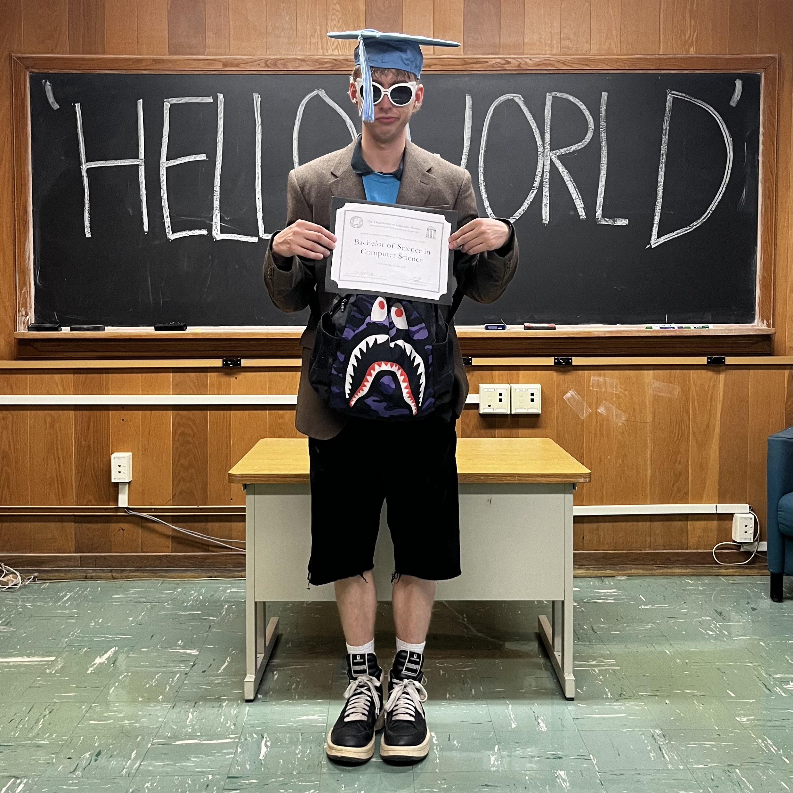

Hi, I'm Gaines! 
I am a recent graduate from The University of North Carolina at Chapel Hill with a B.S. in Computer Science and a minor in Data Science. I have experience with a wide range of programming tools and languages, gained through working on projects, assignments and hacakathons. In my free time I enjoy playing and watching soccer, designing and upcycling clothes, and doing anything outdoors!